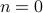
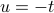
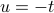

Inversion & Examples
Today marks the first time I'll be typing up my notes LIVE while watching the lecture! This is exciting, terrifying, and pretty stressful. Apparently this phenomenon is known as live-texing (like LaTeX but live)…We'll see how I fare in this mother-of-all-multitasking feats.
Oh, here we go, ready, set, take-off.
Last time we finished up by talking about Fourier Transforms as a limiting case of Fourier Coefficients as the period tended to infinity. It turns out that the analogy extends further, to inverse Fourier transforms reconstructing the original function.
We began this whole discussion by drawing an analogy to periodic functions and Fourier Series, but as we'll see, the Fourier Transform will turn out to be its own beast, with its own properties and behaviors, that extend beyond Fourier Series. Let's remind ourselves of teh definition:
For a function  defined on the real line (not necessarily periodic), its Fourier transform is defined as
defined on the real line (not necessarily periodic), its Fourier transform is defined as
A few comments:
Under the integral, we have a function of
 AND
AND  , but since we integrate over we're left with a function of .
, but since we integrate over we're left with a function of .The value of the Fourier Transform is the area under the curve, just like how the  Fourier coefficient was the average value of
 in a period.
in a period.We're implicitly assuming that this integral exists, so we're actually limiting ourselves to a certain class of functions already.
The Fourier transform is really only defined when the integral exists. This is ‘‘dicey’’ issue – it's an infinite integral, and sines and cosines will oscillate, so things have to cancel. So it is a legit question whether the integral exists
In this calss, we'll assume for now that everything works nicely. Later we'll discuss the subtleties!
Fourier Inversion
Remember that we could reconstruct a periodic function from its Fourier Coefficients by reassembling it from its component parts (its harmonics). We can do an analogous thing with the Fourier Transform of a function:
Comments:
We can recover the original function by performing this complicated integral. Why in the world is this the case?
Only difference between F.T. and inverse F.T. is the sign of the exponent in the complex exponential!
Motivated by this property, we can introduce Fourier Inversion as its own functional transform.
We'll talk more about variable naming later…
There are different ways to define the Fourier transform and the inverse F.T. For instance, physicists use a negative sign and an angular frequency with a  in the exponent. There's lots of different conventions for normalizations and conventions, but it's a mess, so a lot of formulas look different in different places. Different fields have different standards. But there's no deep difference between them.
in the exponent. There's lots of different conventions for normalizations and conventions, but it's a mess, so a lot of formulas look different in different places. Different fields have different standards. But there's no deep difference between them.
There's a few more mathemtatical issues at this point (which we'll discuss later)….but at this point we'll suppress these guilty feelings. ‘‘The rigor police are off duty’’. There are serious issues, but we'll return to them later. For now we want a better sense of how things work before seeing to what extent these formulas are valid.
Where does Fourier inversion come from?
Our game plan here is the same as with defining the Fourier Transform – we'll start with a function that's only nonzero inside some range , and then we periodize it with a big period  so that there's repeating ‘‘islands’’ of the shape with copies at .
so that there's repeating ‘‘islands’’ of the shape with copies at .
This periodized function has a nice fourier series,
where its Fourier coefficients are given by

Now notice that since  is identically 0 outside of the range , it doesn't matter how far we integrate as long as we completely contain that integral! So we'll just extend the limits of integration here to go from to
is identically 0 outside of the range , it doesn't matter how far we integrate as long as we completely contain that integral! So we'll just extend the limits of integration here to go from to  . The reason we want to do this is so that the final form looks like the Fourier Transform.
. The reason we want to do this is so that the final form looks like the Fourier Transform.
Now let's take the limit  . Coefficients go to
. Coefficients go to
And then plug back into the the expression for f(t) to get the expression
where we've defined as .
This is an approximation to an integral! It looks like the Reimann sum sort of definition.
The point of this argument was to justify Fourier Inversion; it shows that the original function can be reconstructed properly by an integral.
Game Plan from now
We want to develop properties of the F.T. – but without any regard to rigor. That is, we'll do our typical tricks of calculus without justifying things, and we have to trust the the integrals convere.
We'll build our understanding by
studying specific examples – special functions that society needs in order to function (?)
studying general properties of the F.T., such as duality, shifts, stretches, modulation, etc…
Prof. Osgood thinks of this analogously to calculus, since we first start out with learning the derivatives and integrals of speical functions – polynomials, logs, etc. – and then we learn general properties – product rule, quotient rule, integration by substitution. So we'll do a similar thing here: we'll start by building our intuition with a few examples.
And remember we won't worry about integrals converging for now. We'll just have to trust Prof. Osgood.
Example: the Rectangle function
Now for some calculations. Why are we performing calculations in class? Well, we'll inevitably have to do this ourselves at some point, and it's illustrative to watch a ‘‘seasoned expert’’ perform some calculations to see how they tend to play out. Then we'll know what tricks to apply and what to expect when we do these integrals ourselves.
You should do these calculations at least once in your life, but they should become second nature in your life after them. (Reminds me of my two friends from calculus class…)
So we'll start off with a silly example: the rectangle function  defined by 1 between and then 0 outside.
defined by 1 between and then 0 outside.
Some people call this a characteristic function (mathemtics), an indicator function (engineers)…there's different sorts of names.
There's also other sorts of conventions for what takes at its endpoints. A commmon convention is to have (and there's some good reason to have this). Part of the reason is that theorem for F.S. about what values the series converges to at jump discontinuities.
I won't actually write out the algebra here, but I'll just outline the main points that Prof. Osgood made in lecture. I can't type up math fast enough!
To calculate the Fourier coefficients, there's no recourse here rather than just to start with the definition. We plug into the integral – but since is 0 outside the interval ![[-1/2, 1/2]](eqs/1682252706543811538-130.png) , we can shrink our range of integration to that interval. And then since just takes on 1 in that interval.
, we can shrink our range of integration to that interval. And then since just takes on 1 in that interval.
We're left with the integral of a complex exponential, which we can evaluate as we do with any other exponential. We're left with the difference of two exponentials where the sign in the exponent is different…which simplifies to a sine.
‘‘I have a damn Ph.D. in mathematics and I don't skip steps’’… we ought to be careful and write everything out, and not be too clever with ourselves.
After a while you come up with some tricks for how to rearrange things with the algebra.
Famously, we end up with the result
and this function is common enough that the elders of the world have decided to christen it as “sinc” of . (Again there's different conventions; physicists don't have the .)
A few comments about the sinc function:
It wiggles around up and down, with zeros at
Famously, the limit at 0 of sinc is 1!
This is the logo of the Fry's electronics in Sunnyvale!! I've seen it all my life, and I've never realized it until now…wow. Different Fry's stores have different themes…the one in Palo Alto is Western-themed and the Sunnyvale one is sinc-themed.
Prof. Osgood wrote to John Fry himself for permission to put these in the course reader…
Next example: the Triangle function
Another fun classic function. It's defined to be 0 outside the interval , and  inside that interval. Notice that unlike the square function, it's continuous (but its derivative isn't – there's a kink at 0.)
inside that interval. Notice that unlike the square function, it's continuous (but its derivative isn't – there's a kink at 0.)
We again have no recourse but to plug into the definition.
Since the function is defined in pieces, we have to split the integral into two parts. For each of the integrals, we have to evaluate them by integrating by parts – not exactly the nicest thing in the world. So before beginning, we take a step back.
There are two separate integrals, but they smell sort of similar….as it turns out, we can do a little trick to relate the integrals. It's a tricky trick! If we give the first integral a special name like  , and then we try to massage the second integral into a shape like …if we do a substitition  and then massage around some minus signs, you find that the second integral is actually
, and then we try to massage the second integral into a shape like …if we do a substitition  and then massage around some minus signs, you find that the second integral is actually  .
.
The moral of this story is
Before diving into algebra, see if you can do some tricks to make your life easier.
A few other morals of this story are
Giving things a name helps you modify them algebraically! i.e. modifying
to .integration by parts is your bread and butter (?)
Anyways at the end of the day, with this little trick, we only have to integrate by parts once. We end up with
Remarkably, once we work through the weeds, we find that the Fourier Transform of the triangle function is sinc squared!
Now, we could have predicted this by noticing that the triangle function is the convolution of the square function… ;)
Final example: the Gaussian
So far, we haven't done any real magic. This one is real magic!
The Gaussian is the famous bell-shaped curve defined by . (Again, there's all sorts of different normalizations; this one is the one we're using.)
There's a famous formula that the integral of the Gaussian is 1. It's one of the most beautiful and famous tricks in mathematics that goes back to Euler. It's marvelous!
The trick to calculating the Fourier Transform is to do Feynman's trick of differentiating under the integral sign.
In our expression for the fourier transform, we differentiate with respect to s, so that it only hits the complex exponential and not the real Gaussian exponential. It pulls down a factor of
, as well as some numerical constants.‘‘Bless your soul, this thing is perfectly set up for integration by parts!’’ Indeed, we have a up in the exponent, and since the pulled down a factor of
, we now have a its derivative present as well…so there's a total derivative present!We let that total derivative be our
 when we integrate by parts. The boundary term at infinity vanishes, and we're left with another integral that looks remarkably like our original integral!
when we integrate by parts. The boundary term at infinity vanishes, and we're left with another integral that looks remarkably like our original integral!
Our we end upw ith an expression that looks like
‘‘What'd'you know, you son of a … gun’’ this is an ordinary differential equation for F(s)! We can solve this easily; we know the initial condition because the integral of the Gaussian is 1, and then we're left with the beautiful expression .
So the Fourier Transform of a Gaussian is itself! What magic.